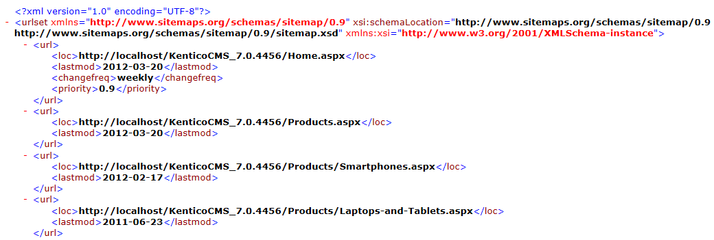

Google Sitemaps
Kentico allows you to automatically generate sitemaps for your websites according to the Google Sitemap Protocol. Sitemaps help search engines correctly index the content of websites and can have a significant effect on the resulting search ranking.
A sitemap is an XML file that lists the URLs of a website's pages along with additional metadata. Search engine crawlers (robots) use the sitemap data to determine which pages to index and how often to re-index pages. Sitemaps only serve as a recommendation and do not guarantee that all crawlers will index your website strictly according to the specified data.
For detailed information about the Sitemap protocol, see http://www.sitemaps.org/.
Setting the sitemap URL
To adjust the URL of your website's sitemap:
Open the Settings application.
Select the URLs and SEO category.
Enter the required URL into the Google sitemap URL setting.
Click Save.
For example, the default value googlesitemap.xml means that web crawlers can access the sitemap through the following URL:
<website domain>/googlesitemap.xml
Using the .xml extension
If you want to have your sitemap available under a URL with the .xml extension, you need to configure your application to handle all types of request extensions:
Edit your application's web.config file.
Find the system.webServer section directly under the web.config root (i.e. not under a specific <location> element).
Set the runAllManagedModulesForAllRequests attribute to true for the opening tag of the <modules> element:
<system.webServer><modules runAllManagedModulesForAllRequests="true">...</modules>
Defining the sitemap content
The system generates sitemaps for websites based on the pages stored in the content tree.
By default the sitemap:
Only contains pages of the CMS.MenuItem type
Automatically excludes all pages whose parent page is not in the sitemap, such as pages stored under folders or custom page types
You can modify the content of your website's sitemap by creating a dedicated sitemap page:
Open the Pages application.
Create a new Page (menu item) page in your website's content tree.
Place the Google Sitemap (XML Sitemap) web part onto the page.
Adding this web part stops the page from displaying standard content. Instead, the page returns an XML response with the sitemap data.
The web part only generates output when the page is accessed on the live site.
Configure the content of the sitemap through the web part's properties.
You can limit which pages are included in the sitemap by entering an appropriate Path expression.
By default, the sitemap is generated in the same order as the pages appear in the content tree. Use the ORDER BY property if you need to change the order of the pages generated by the sitemap. For example, DocumentCreatedWhen DESC sorts the site map from the newest page (at the top) to the oldest page (at the bottom).
Open the Settings application and select the URLs and SEO category.
Enter the path of your sitemap page into the Google sitemap path setting.
Click Save.
The sitemap generated by the web part replaces the default sitemap. Search crawlers can access the sitemap either under the main URL specified in the Google sitemap URL setting, or directly through the URL of the page containing the Google Sitemap web part.
Customizing the default sitemap directly
If you do not wish to use portal engine pages and web parts, you can instead edit the markup of the ~/CMSPages/googlesitemap.aspx system page. This page generates the default sitemap for websites that have an empty Google sitemap path setting.
The GoogleSitemap control on the page provides the same configuration options as the Google Sitemap web part.
Troubleshooting:
If you encounter problems with pages missing in your sitemap, try checking for the following:
Manually excluded pages - specific pages may be excluded through their sitemap properties (Show in sitemap or Exclude from search).
Incorrect content filtering - review the content filtering properties of your Google Sitemap web part.
If the Page types property is empty, the sitemap only loads CMS.MenuItem pages. Add the page types that you wish to have in the sitemap. You can use the asterisk (*) wildcard to specify all page types.
Broken page hierarchy - sections of the website may be excluded due to parent pages missing in the sitemap. To load all pages regardless of the parent‑child hierarchy in the content tree, disable the Hide children for hidden parent property of the Google Sitemap web part.
Configuring sitemap settings for specific pages
By filling in the sitemap properties of pages, you can exclude specific pages from sitemaps or give search crawlers additional details describing how to index pages:
Open the Pages application.
Select the page in the content tree.
Open the page's Properties -> Navigation tab.
Set up the following properties:
Basic properties
Show in sitemap
Sitemaps only list pages that have this property enabled.
Search & SEO
Exclude from search
Marks the page to be ignored by all forms of search, including search engines.
Enabling this checkbox excludes the page from sitemaps by default. However, individual Google Sitemap web parts can override this setting and generate sitemaps including pages that are excluded from search.
Sitemap change frequency
Determines the value of the page's <changefreq> tag in the sitemap. This metadata provides a suggestion to search engines about how often they should re-index the page.
Choose a value that reflects how frequently the page's content changes.
Sitemap priority
Allows you to inform web crawlers which pages you consider to be the most important.
The system converts the selected priority to a decimal number between 0 and 1 and adds the number as the value of the page's <priority> tag in the sitemap. Web crawlers only measure the priority in relation to other pages on the website.
If you enter the URL of the sitemap into your browser, you can review the generated XML output. The system automatically creates the required XML structure.

XML output of the Google sitemap generated for a Kentico website
The <url> elements represent individual pages.
The sitemap loads the values of the <loc> and <lastmod> tags from the data of the corresponding pages.
The <changefreq> and <priority> optional tags are added for pages that have values in their Sitemap change frequency and Sitemap priority properties.
Creating sitemap indexes
A single XML sitemap can only list up to 50 000 pages (URLs). If you need to include more pages, prepare multiple sitemaps and create a sitemap index for your website:
Add any number of sitemap pages, each one containing its own Google Sitemap web part.
Separate your website's pages between the sitemaps by configuring the content filtering properties of the web parts.
Each sitemap can contain a maximum of 50 000 items.
Avoid duplicate content — do not list the same page URLs in multiple sitemaps.
Create the index as another page with a Google Sitemap web part.
Switch the Sitemap mode property of the web part to Sitemap index.
Configure the content filtering properties so that the sitemap index web part loads only the pages representing your sitemaps.
Enter the path of your sitemap index page into the website's Google sitemap path setting.
This ensures that crawlers process the sitemap index first.
The sitemap index points search engine crawlers to the other sitemaps, which then provide the lists of page URLs in the usual way.
Customizing the XML format of sitemaps
If you need to override the default XML format of a sitemap or index, you can specify a custom transformation for the Google Sitemap web part or GoogleSitemap control. This allows you to react to any changes in the Sitemap protocol.
For example, the default CMS.Root.GoogleSiteMap transformation uses the following code to define the sitemap structure:
<url> <%# GetSitemapItem("loc") %> <%# GetSitemapItem("lastmod") %> <%# GetSitemapItem("changefreq") %> <%# GetSitemapItem("priority") %></url>The GetSitemapItem transformation method generates XML tags according to the sitemap protocol. The method's parameter specifies the type of the tag, and the value is dynamically loaded from the data of the transformed pages.
In the final XML output, the web part automatically encloses the transformed items within either a <urlset> or <sitemapindex> element depending on the selected Sitemap mode.
Creating sitemaps for multilingual websites
Websites that offer content in multiple languages use different URLs for different language versions of the same page.
To include pages from all languages in your sitemap, you need to use one of the approaches described below.
Submitting separate sitemaps for different language versions of the website
One way to handle multilingual content is to present a separate sitemap for each language version of the website. This approach works best if your website is fully translated into all supported languages.
You do not need to create multiple sitemaps. When submitting your sitemap to search engines, add the appropriate language modifiers to the sitemap URL. The format must match the URL structure that you use to identify language versions on your website.
See Configuring URLs for multilingual websites for detailed information about the available options.
|
Multilingual URL structure |
Description |
Examples of full sitemap URLs |
|
Separate domain names |
Use the appropriate domain name when submitting the sitemap URL. The sitemap automatically loads the page URLs for the language that matches the domain name. |
|
|
URL language prefixes |
Include the language prefix when submitting the sitemap URL. |
|
|
URL language parameters |
Add the language query string parameter when submitting the sitemap URL. Warning: This approach is not recommended. If your website does not use culture-specific domains or language prefixes, URL conflicts may occur between the different language versions of the same page. |
|
The sitemap automatically lists the pages from the language version of the website specified by the full sitemap URL.
Important
To ensure that the sitemap dynamically presents pages for the language determined by the sitemap URL, you need to leave the Culture code property of your Google Sitemap web part with an empty value.
Preparing one sitemap for all languages used on the website
You can list the URLs of the pages from all language versions of the website inside a single sitemap. This approach is most suitable for websites that are not fully available in the non-default languages, i.e. if only a limited number of pages are translated.
Create a separate sitemap page for each language, each one containing its own Google Sitemap web part.
Assign the language through the Culture code property of the web part.
Set the Combine with default culture property to No (prevents duplicate entries if your website uses the default content for untranslated pages).
Add a sitemap index page and configure it to load the language-specific sitemap pages.
Each sitemap page lists the URLs of the pages available for a particular language. The sitemap index combines the output of all language-specific sitemaps. You can then submit the URL of the sitemap index to search engines without any language modifiers.